首份 Anthropic Public Record 调查的结果
📖 中文摘要
专业术语注解
Anthropic Public Record：Anthropic定期重复开展的全国代表性公众AI态度调查系列，首轮于2025年末实地执行认知依赖（cognitive dependency）：因深度使用AI而丧失独立思考与判断能力的担忧，是本轮调查第二大恐惧整合型用户（integrated users）：每天在工作与个人生活中各至少使用一次AI的受访者，约占6%加权：按人口普查基准调整样本权重，使调查结果可代表整体人口结构误差范围：给定置信水平下抽样结果与真实值之间允许的偏差幅度，全国为±0.6个百分点📄 中文全文
- 类别： 社会影响（Societal Impacts）
- 来源： https://www.anthropic.com/research/anthropic-public-record
社会影响（Societal Impacts） 2026 年 6 月 12 日 已发布 2026 年 6 月 12 日 团队 社会影响 主题
相关文章 * 社会影响 2026 年 8 月 26 日 支持关于人们如何使用 Claude 的独立研究
阅读更多 我们正在开展一项新的系列调查——Anthropic Public Record，以了解公众如何看待与感受 AI，并在此呈现第一轮调查结果的快照；该轮调查于 2025 年 11 月与 12 月实地执行，覆盖近 52,000 名美国人。 我们发现： * 近半数（48%）美国人把治愈癌症或阿尔茨海默病之类的疾病列为他们对 AI 的前三大期望之一，其次是帮助残障人士（36%），然后是推动技术进步与让生活总体更轻松（两者并列 23%）。 * 在所有州，AI 引发的失业都是最常见的恐惧，64% 的美国人持有这一恐惧。第二突出的恐惧是认知依赖（cognitive dependency，56%），其次是错误信息（52%）。 * 对政府干预 AI 的支持度很高：在我们调查的美国人中，超过 70% 认为政府应当在监管 AI 中发挥作用，且这种支持跨越党派。人们最希望政府在隐私（56%）、儿童安全（52%）与伤害责任（49%）这几个领域对 AI 采取行动。 * 当被问及什么最能确保 AI 造福人类时，美国人把让 AI 公司对伤害承担法律责任（47%）与把安全置于增长之上（44%）列为杠杆最大的行动。 * 只有 15% 的美国人表示，他们信任 AI 公司来决定 AI 如何被开发与使用。


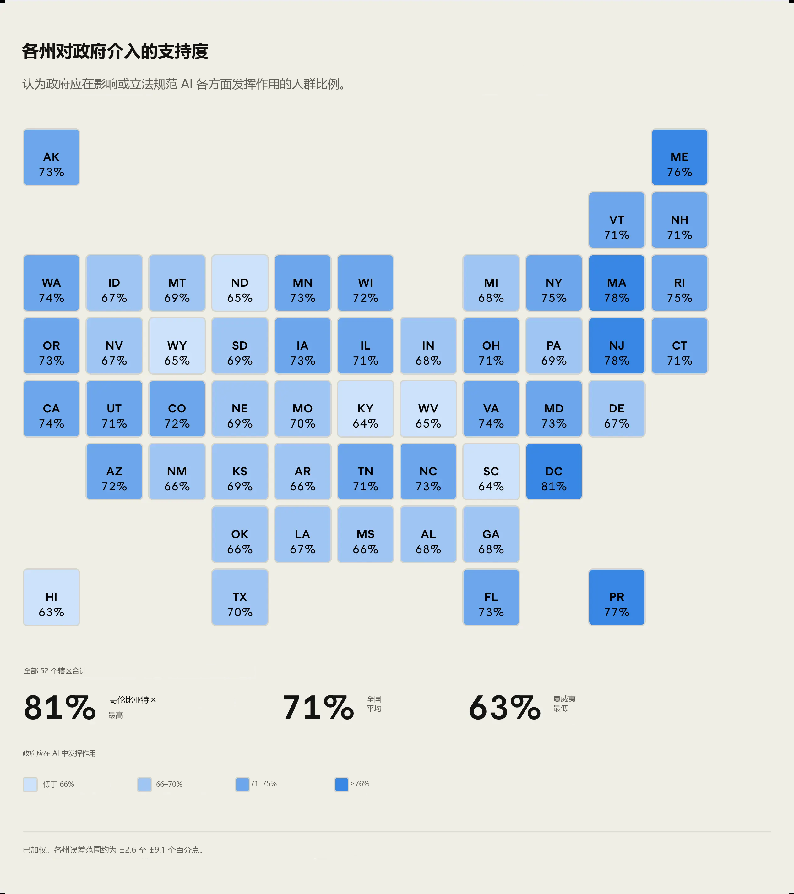
引人注目的是，在多数问题上，AI 并没有沿典型的党派、地域或教育界线严重分裂美国人。总体而言，各议题上存在广泛共识：美国人渴望实现 AI 所承诺的好处，却害怕它可能带来的冲击，并且他们要求构建 AI 的公司承担责任。就我们确实看到分歧的地方而言，分歧主要只在于人们观点的强烈程度。 这项研究建立在 Anthropic 正在进行的其他工作之上，那些工作旨在理解人们如何使用 Claude、如何思考 AI 的发展。我们最近通过 Anthropic Interviewer——我们用于大规模开展深度访谈的工具——完成了一项覆盖 81,000 名 Claude 用户的全球质性研究。我们还定期发布Anthropic 经济指数的数据，该指数依托匿名化的 Claude 使用数据，展示世界各地的人们如何使用 AI。Anthropic Public Record 调查是我们第一次与普通公众对话，让我们得以触达 AI 的非使用者，并更好地理解态度在不同人口特征上如何分化。 Anthropic Public Record 将定期重复开展，随着新议题变得更受关注而演进其范围，并让我们得以追踪公众对 AI 的态度如何随模型能力进步与采用深化而变化。未来，我们计划把调查扩展到美国以外。方法简介
我们于 2025 年 11 月与 12 月开展了一项具有全国代表性的在线调查，样本为 51,993 名美国人，样本取自 YouGov，并按美国人口普查基准加权。各州样本量从 n=232（阿拉斯加）到 n=1,902（纽约）不等，州级误差范围为 ±2.6 至 ±9.1 个百分点。关于方法的更多细节见附录。
美国人希望 AI 带来什么
我们请美国人从 17 个选项中选出他们对 AI 的前三大期望。治愈疾病位居榜首，48% 的受访者把它列入前三，比第二常被选择的选项——帮助残障人士（36%）——高出 12 个百分点。心理治疗与减少孤独感这类选项——或者说希望 AI 能够替代人际接触的期望——在所给选项中排名最低。
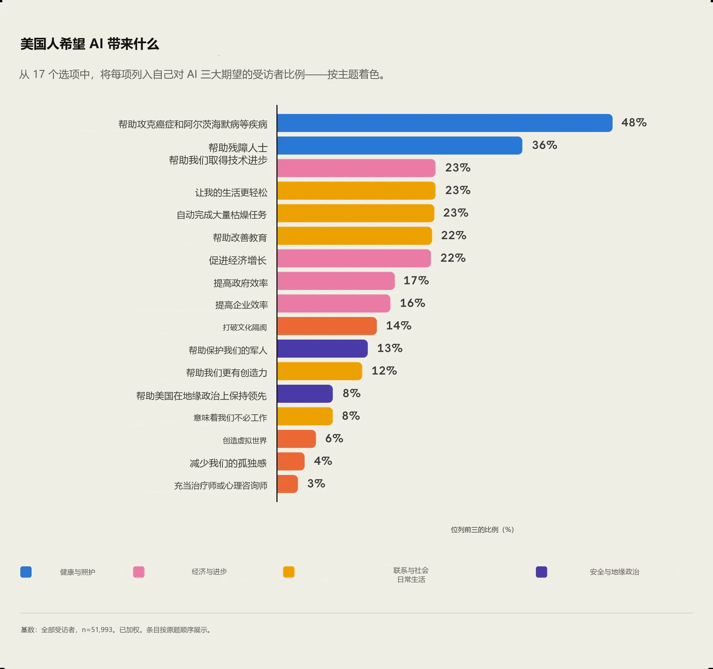
美国人的恐惧
我们给受访者一份 20 种潜在 AI 危害的清单，请他们标出自己个人感到担忧的每一项，然后按五点量表为每项打分，衡量自己有多担心。我们把任何选择 2（有些担心）或更高的回答都视为担心。（这一方法与上面的问题不同，那里我们请参与者只对三大期望排序；两组数字不可比较。） 失业是迄今最常见的担忧，近三分之二（64%）的美国人持有这一担忧。其次是认知依赖——即 AI 的融入让人无法独立思考——为 56%，然后是错误信息，为 52%。失业与认知依赖也出现在我们对 81,000 名 Claude 使用者的质性研究中最主要的恐惧之列。 最常见的危害往往近在眼前且具体：失业、认知依赖、错误信息、犯罪性使用与监控。这些恐惧也都早于 AI 存在，在先前的技术中有先例——例如自动化导致失业、智能手机助长依赖、社交媒体传播错误信息。总体而言，美国人更关注 AI 的滥用，而非 AI 失准（misalignment），他们提及犯罪性使用、监控与恐怖主义的频率高于例如 AI「失控」。 除我们提到的三种危害外，对其余所有危害，多数受访者都称自己「不担心」，但没有任何一种潜在危害是少于四分之一美国人至少有些担心的。
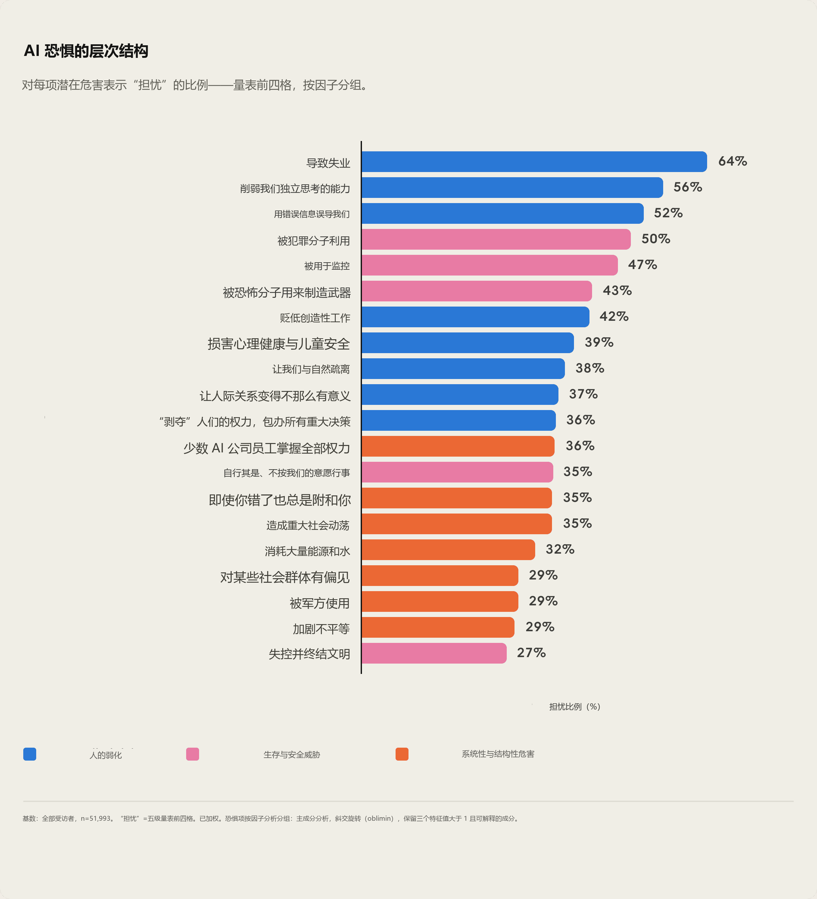
与失业相关的规律
64% 的美国人担心 AI 会取代工作岗位。这种担忧的分布相当均匀。它是民主党人（67%）与共和党人（62%）中排名第一的恐惧，在有孩子的家庭（59%）与没有孩子的家庭（66%）中都是如此，在每一个州也都如此——从高端的艾奥瓦州（71%）到低端的密西西比州（57%）。

受教育程度越高的美国人，对失业的担忧越强
对岗位被取代的担忧随受访者受教育程度上升而上升。拥有研究生学位的美国人比高中及以下学历者担心失业的比例高出近 10 个百分点。换句话说，最担心被取代的劳动者，正是那些工作已与 AI 被要求完成的任务重叠得更紧密的人——这一发现反映在我们经济研究团队对全球 Anthropic Interviewer 研究的分析中。
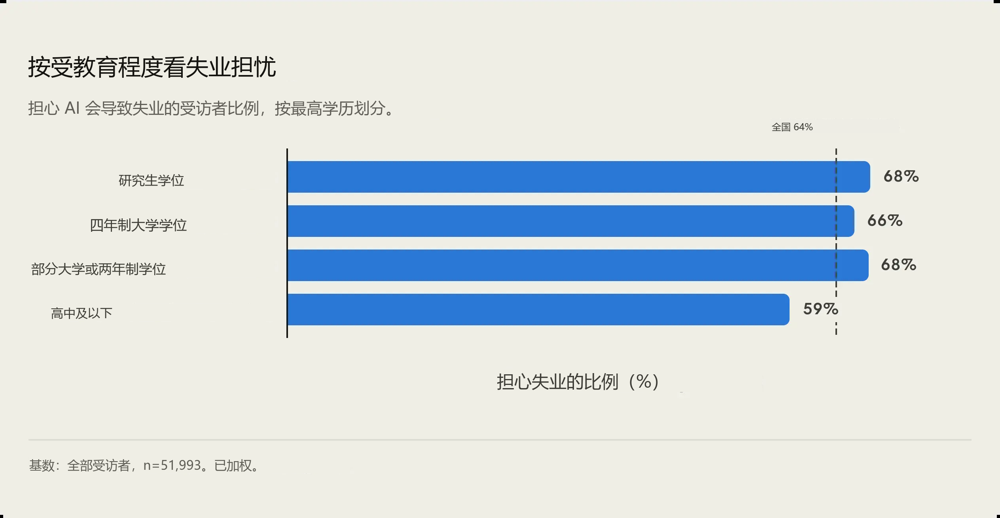
最少使用 AI 的人，对失业的恐惧更强
与此同时，每天在工作中使用 AI 的人，对失业的担忧明显低于完全不用 AI 的人：54% 对 70%。
 这一趋势有许多可能的解释。亲手使用 AI 的经验或许能帮人们培养技能与熟练度，使他们能够增强而非自动化自己工作中的部分环节，从而让失业看起来不那么像迫在眉睫的威胁。亲手使用的经验也可能让人看到 AI 的局限。很可能这是这些因素与其他因素的共同作用。
这一趋势有许多可能的解释。亲手使用 AI 的经验或许能帮人们培养技能与熟练度，使他们能够增强而非自动化自己工作中的部分环节，从而让失业看起来不那么像迫在眉睫的威胁。亲手使用的经验也可能让人看到 AI 的局限。很可能这是这些因素与其他因素的共同作用。
对 AI 能力的感知与工作场景中的接受度
我们给受访者一份 14 项工作任务的清单，并针对每项问两个问题：「你认为 AI 工具或应用今天能把这项任务完成得多好？」以及「想到你自己的工作，对于以下每项工作任务／用途，你希望 AI 参与多少？」
对 AI 能力的总体评价相当高。在高端，75% 的美国人认为 AI 在研究上与人相当或更好。在低端，44% 认为 AI 在服务与支持上与人相当或更好。
在多数任务上，多数美国人并不希望 AI 参与自己的工作；即便在他们评价 AI 最有能力的任务上——例如研究与数据分析——也有近半数受访者表示，希望自己的工作中完全没有 AI 参与。不过，对工作场所中 AI 参与的接受度似乎与感知到的能力同步变化：AI 在某一领域被感知为越有能力，人们就越可能愿意使用它。

认知依赖是一种预期性恐惧
我们调查中第二常见的恐惧是对 AI 的认知依赖。为更好地理解人们是否真的在经历依赖，我们询问受访者：如果明天 AI 不可用了，他们会感到多大程度的失序；然后比较担心依赖者与不担心者的回答。 到目前为止，认知依赖似乎主要是一种预期性恐惧：在表达某种担忧的那 56% 美国人中，只有约五分之一会在 AI 不可用时感到显著失序。相反，在不担心依赖的 44% 人中，有更高比例——约三分之一——会感到显著失序。
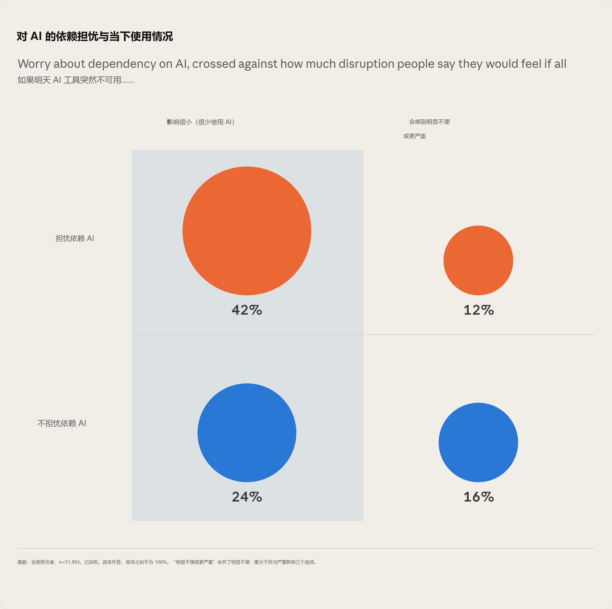
我们在81,000 名 Claude 使用者中的质性研究发现，教育工作者报告亲眼目睹认知萎缩的可能性是平均水平的 2.5 至 3 倍，大概是在他们的学生身上。在 Anthropic Public Record 中，教育工作者同样属于最担心依赖的职业之一，仅次于从事艺术与设计的人。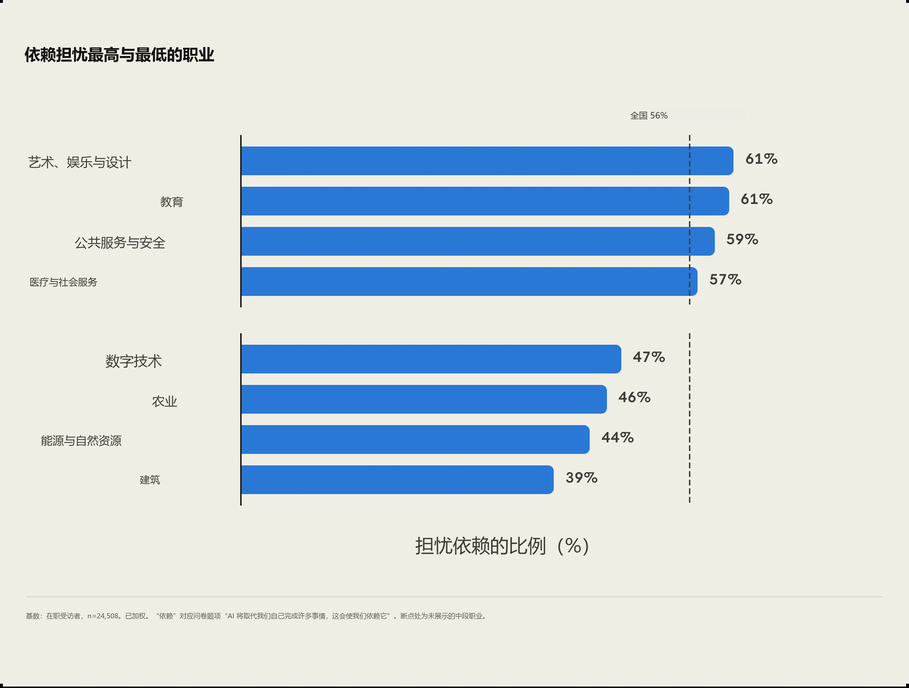
与失业一样，对依赖的恐惧随使用频率上升而稳定下降。每天在工作中使用 AI 的美国人，对依赖的担忧比从不使用的人低 16 个百分点（46% 对 62%）。最重度的 AI 使用者告诉我们什么
截至 2025 年底，约 6% 的美国人在工作与个人生活中每天都使用 AI。这些整合型用户（integrated users）是更密集采用 AI 之后会是什么样子的预览，也可能预示随着采用增长主流观点将走向何处。
整合型用户偏向年轻、男性、城市、在职、受过大学教育。近三分之二的人形容自己是那种会在多数人之前尝试新技术、或一看到潜力就早早采用的人，而普通公众中这一比例为 30%。
 在我们列出的每一种危害上，整合型用户都比普通公众更少担忧，不过这大概反映的是早期采用者在观念上的差异。
在我们列出的每一种危害上，整合型用户都比普通公众更少担忧，不过这大概反映的是早期采用者在观念上的差异。

美国人希望 AI 治理做什么
71% 的美国人认为政府应当参与 AI 的开发与监管。这一数字在民主党人中为 79%，共和党人中为 68%，独立人士中为 69%——跨党派超级多数。在我们调查的每一个州与领地，多数人都支持政府参与 AI，从哥伦比亚特区的 81% 到夏威夷的 63%。

美国人希望政府在哪些方面行动
我们随后询问了八个具体领域，以及政府在每个领域应介入多深。只有两个领域——隐私与儿童安全——获得了对「超过最低限度角色」的明确多数支持。与此同时，国家安全是党派差距最窄的领域，民主党人与共和党人之间仅差三个百分点。

美国人希望产业界做什么
当我们问及应当怎样确保 AI 以人类利益为出发点开发时，美国人的答案集中在两点：让 AI 公司对伤害承担法律责任（47% 将其列入前三）与把安全置于增长之上（44%）。其后是拥有实权的独立监督机构（29%）与为安全而放慢 AI 发展（27%）。

信任赤字
只有 15% 的美国人表示，他们信任 AI 公司来决定这项技术如何被开发与使用。这是我们测试的所有机构中最低的数字，低于联邦政府（20%）、州与地方政府（19%）以及国际机构（20%），也远低于独立专家（43%）。
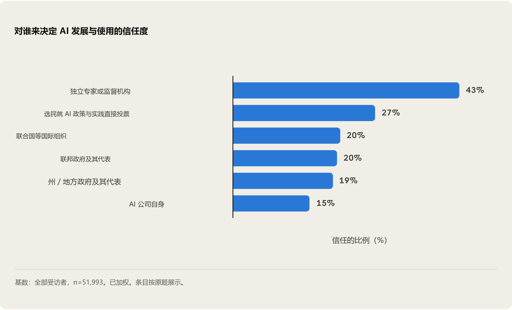
整合型用户对监管与监督的胃口同样大
整合型用户对我们询问的每一个机构都更信任，包括 AI 公司——并且明显更不倾向于认为应当放慢或停止 AI 发展。不过，他们在政府参与 AI 上也以基本与全国一致的比例表示支持（74% 对 71%），在我们测试的八个具体治理领域上，他们的偏好与公众几乎无法区分。
Anthropic 的举措与下一步
公众的意见对于确保强大的 AI 服务于人类利益至关重要。Anthropic Public Record、Anthropic Interviewer、Anthropic 经济指数以及我们的许多其他研究项目，都是为了更深入地理解公众，并从公众那里获得关于如何让 AI 转型顺利进行的意见。 我们最近公布了若干与这些发现相关的政策框架。我们的《先进 AI 框架》提出对前沿模型进行强制性独立安全测试、透明度要求，以及赋予政府封禁或召回危险 AI 部署的权力。我们的《经济政策框架》阐述政府如何为 AI 的经济影响做准备——尽可能减少岗位被取代，并支持劳动者，让 AI 的好处被广泛分享。 AI 的方向不应只由构建它的公司来决定。公众的希望与担忧被测量得越清晰，我们——以及其他公司——就越能更好地回应它们。
附录：方法
总体与方式： Anthropic Public Record 是一项针对美国 16 岁及以上青少年与成年互联网人口的在线调查，受访者居住于 50 个州、哥伦比亚特区或波多黎各。实地执行由 YouGov 于 2025 年 11 月 1 日至 12 月 11 日在其在线样本库中完成。 样本设计： 本研究设计为 52 个平行的州与领地样本，目标每州约完成 1,000 份（蒙大拿、北达科他、南达科他、怀俄明、佛蒙特与波多黎各约 500 份）。在每个州内按年龄、性别、教育与种族／族裔设定配额。实际完成样本为 51,993 份，各州样本量从 232（阿拉斯加）到 1,902（纽约）不等。 加权： 数据按州、年龄、性别、教育与种族／族裔加权，以代表 16 岁及以上的美国常住人口。权重被归一化到实际样本量（均值 1.00，总和 51,993）。 误差范围： 当比例为 50% 时，全国抽样误差在 95% 置信水平下为 ±0.6 个百分点。州级误差范围从 ±2.6 个百分点（加利福尼亚、纽约、得克萨斯）到 ±9.1 个百分点（怀俄明）。子组的误差范围更大。 报告惯例： 本报告中所有百分比均已加权。除非另有说明，百分比以整个细分群体为分母（回答「不知道」或跳过的受访者仍留在基数中）。恐惧题组中的「担心」指五点担忧量表中最高的四档。能力题组中的「与人相当或更好」指五点表现量表中最高的三档。「整合型用户」指报告每天至少一次在工作中使用 AI、且每天至少一次用于个人用途的受访者（未加权 n=2,717）。党派归属分组包含倾向者。 局限： Anthropic Public Record 记录的是 2025 年底美国人对 AI 的看法。我们把它当作一个基线。
▸ 英文原文（点击展开）
Results from the first Anthropic Public Record
- Date: 2026-06-12
- Source: https://www.anthropic.com/research/anthropic-public-record
Results from the first Anthropic Public Record
Published Jun 12, 2026 Team Societal Impacts Topics
Related articles * Societal Impacts Aug 26, 2026 Enabling independent research on how people use Claude
View more We’re conducting a new survey series, Anthropic Public Record, to understand how the public thinks and feels about AI, and presenting a snapshot of the results from the first wave, fielded in November and December of 2025 with nearly 52,000 Americans. We found: * Nearly half (48%) of Americans ranked curing diseases like cancer or Alzheimer’s as one of their top three hopes for AI, followed by helping people with disabilities (36%), then making technological progress and making life easier in general (tied at 23%). * AI-induced job loss was the most common fear in every state, held by 64% of Americans. The second most prominent fear was cognitive dependency (56%), followed by misinformation (52%). * Support for government intervention in AI was high: over 70% of the Americans we surveyed believe the government should play a role in regulating AI, and this support was bipartisan. People were most eager to see the government take action on AI in the areas of privacy (56%), child safety (52%), and liability for harm (49%). * When asked what would best ensure AI is of benefit to humanity, Americans ranked holding AI companies legally liable for harm (47%) and prioritizing safety over growth (44%) as the highest-leverage actions. * Only 15% of Americans said they trust AI companies to make decisions about how AI is developed and used.
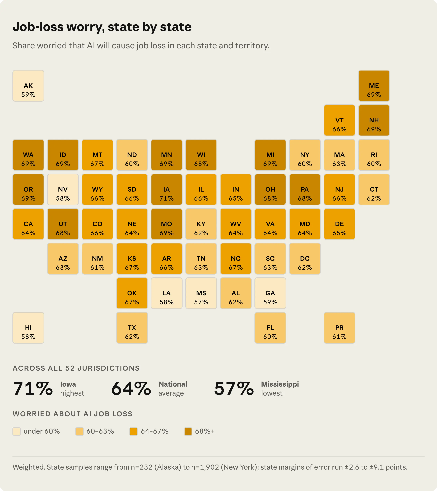
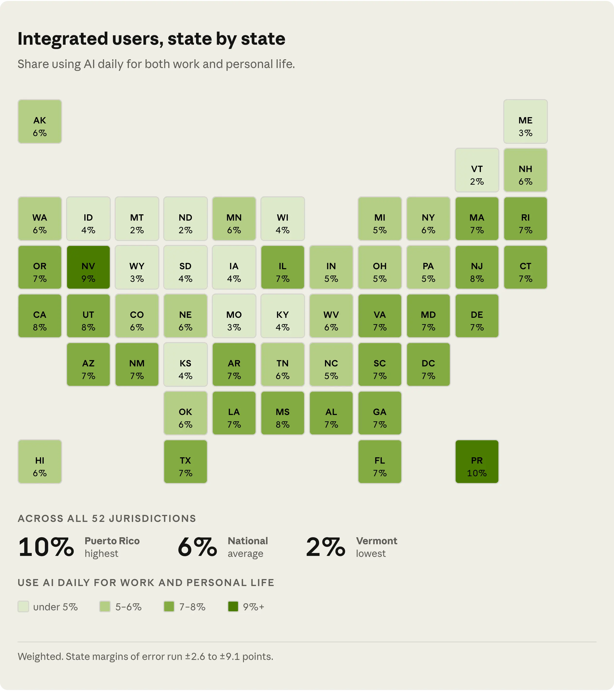
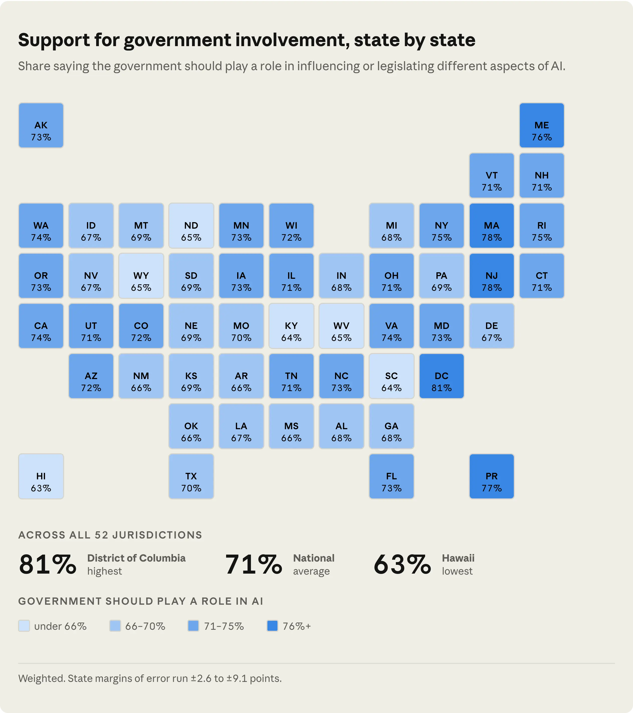
Strikingly, on most questions, AI did not heavily divide Americans along typical partisan, geographic, or educational lines. In general, there was broad consensus across topics: Americans are eager to realize AI’s promised benefits but fear the disruption it may bring, and they want accountability from the companies building it. To the extent we saw disagreement, it was largely only in the intensity of people's views. This research builds on other work underway at Anthropic to understand how people use Claude and think about AI development. We recently conducted a global qualitative study of 81,000 Claude users through Anthropic Interviewer, our tool for conducting in-depth interviews at scale. We also regularly release data from the Anthropic Economic Index, which draws on anonymized Claude usage data to show how people around the world are employing AI. The Anthropic Public Record survey marks the first time we’ve spoken to the general public, allowing us to reach non-users of AI and better understand how attitudes differ across demographic lines. The Anthropic Public Record will be repeated regularly, evolving in scope as new topics become more salient, and allowing us to track how the public’s attitudes towards AI change as model capabilities advance and adoption deepens. In the future, we plan to expand outside the US.Method in brief
We conducted a nationally representative online survey in November and December of 2025 of 51,993 Americans, sourced from YouGov and weighted to US Census benchmarks. State samples range from n=232 (Alaska) to n=1,902 (New York), with state-level margins of error between ±2.6 and ±9.1 percentage points. More details on the methodology are available in the Appendix.
What Americans hope AI will deliver
We asked Americans to choose their top three hopes for AI from a list of 17. Curing disease topped the list, with 48% of respondents putting it in their top three, 12 percentage points ahead of the second most commonly selected item, helping people with disabilities, at 36%. Items like therapy and reducing loneliness—or hopes that AI might substitute for human contact—were the lowest ranked of the options presented.
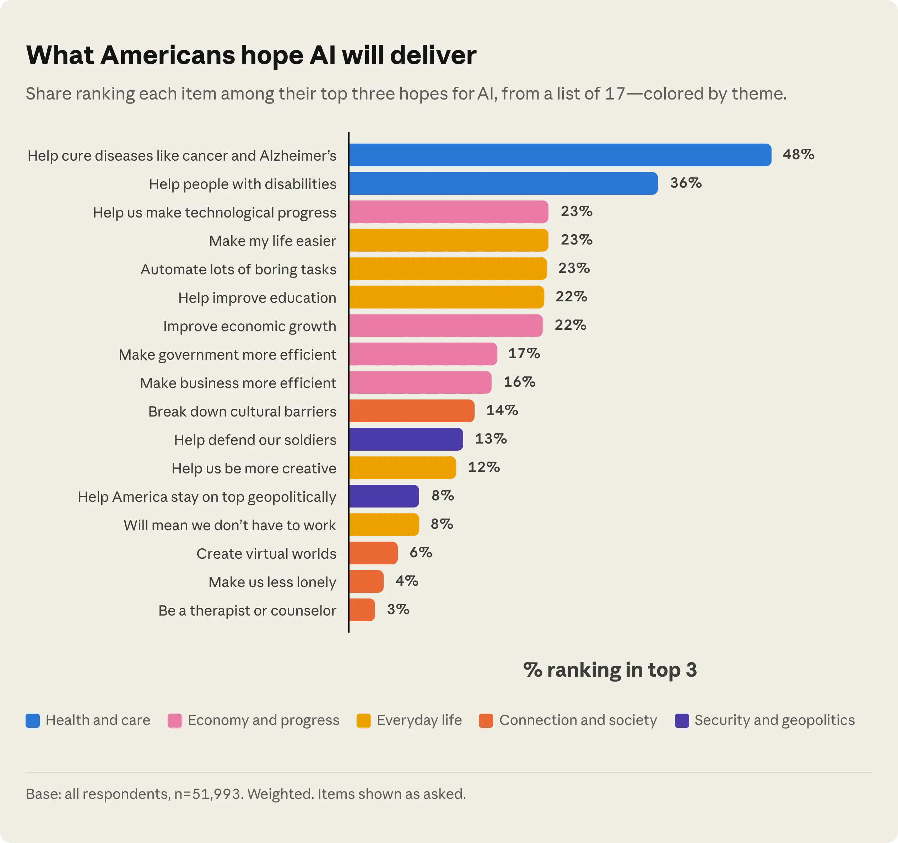
What Americans fear
We gave respondents a list of 20 possible harms from AI, asked them to flag each one they felt personally concerned by and then to rate each on a five-point scale of how worried they were. We considered any response of 2 (somewhat worried) or higher as worried. (This methodology differs from the question above, in which we asked participants to rank only their three hopes; the numbers aren’t comparable.)
Job loss was by far the most common concern, held by nearly two-thirds (64%) of Americans. This was followed by cognitive dependency—in which AI integration leaves people unable to think for themselves—at 56%, and misinformation at 52%. Job loss and cognitive dependency were also among the top fears in our qualitative study of 81,000 people using Claude.
The most common harms tended to be near-term and concrete: job loss, cognitive dependency, misinformation, criminal use, and surveillance. Each of these fears also predates AI, having precedent in an earlier technology—for example, automation causing job loss, smartphones fostering dependency, and social media spreading misinformation. In general, Americans tended to be more concerned with the misuse of AI than AI misalignment, citing criminal use, surveillance, and terrorism more frequently than, for example, AI “going rogue”.
For all but three of the harms we mentioned, a majority of respondents described themselves as “not worried,” but there was no potential harm about which less than 1/4 of Americans had at least some concern.

Patterns with job loss
Sixty-four percent of Americans are worried that AI will displace jobs. The concern is remarkably evenly distributed. It is the top-ranked fear among Democrats (67%) and Republicans (62%), in households with children (59%) and without (66%), and in every state from Iowa at the high end (71%) to Mississippi at the low end (57%).
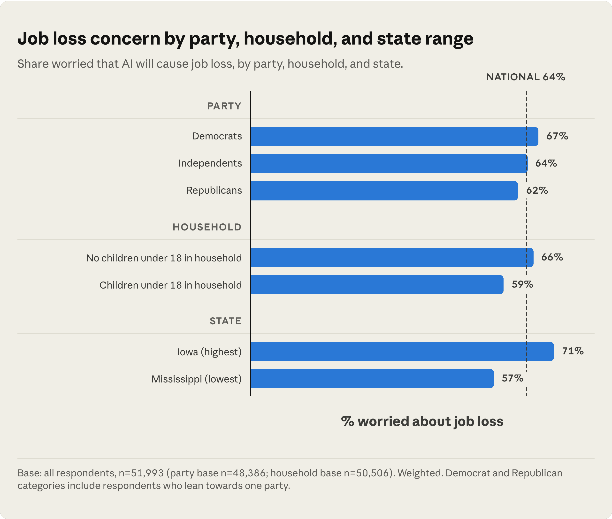
Job loss concerns are higher among Americans with more education
Concerns over job displacement rise with a respondent’s education level. Americans with postgraduate degrees are nearly 10 percentage points more worried about job loss than those with a high school education or less. The workers most worried about displacement, in other words, are the ones whose work already overlaps more closely with what AI is being asked to do—a finding reflected in our economic research team’s analysis of our global Anthropic Interviewer study.
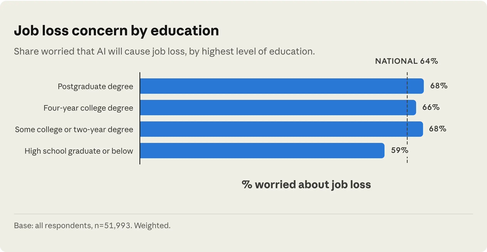
Fear of job loss is heightened among those who use AI least
At the same time, people who use AI at work every day are notably less worried about job loss than people who don’t use AI at all: 54% versus 70%.
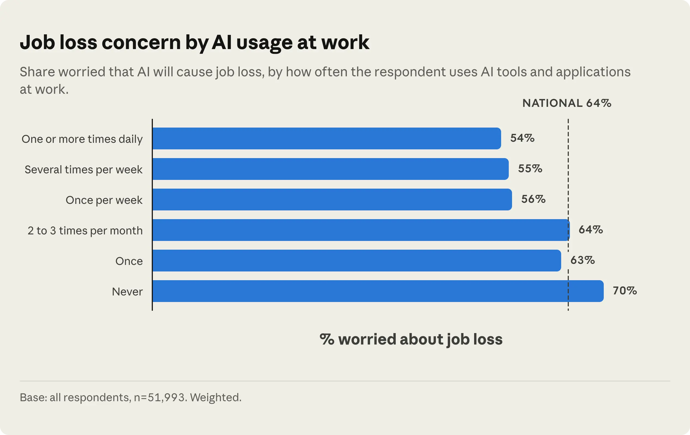
There are many possible explanations for this trend. Hands-on experience with AI may help people develop skills and fluency that allow them to augment rather than automate parts of their job, making job loss seem like less of a looming threat. Hands-on experience may also reveal AI's limitations. Likely it’s a combination of these and other factors.Perceived capabilities and acceptance of AI at work
We gave respondents a list of 14 workplace tasks and for each asked two questions: “How well do you think an AI tool or application could perform this task today?” and “Thinking about your own job, how much AI involvement would you prefer for each of the following work tasks/purposes?” Overall assessment of AI capabilities was fairly high. At the high end, 75% of Americans said AI was as good or better than humans on research. At the low end, 44% said AI was as good or better in service and support. On most tasks, a majority of Americans did not want AI involved __ in their jobs, and even on the tasks they rated AI most capable—such as research and data analysis—nearly half of respondents said they want no AI involvement in their own work. However, acceptance of AI involvement within the workplace seems to move in lockstep with perceived capabilities: the more competent AI is perceived to be in a given domain, the more likely people are to be willing to use it.
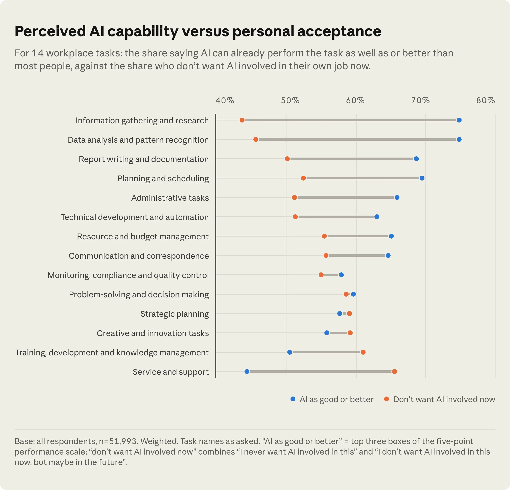
Cognitive dependency is an anticipatory fear
The second most common fear in our survey was cognitive dependency on AI. To better understand whether people might actually be experiencing dependency, we asked respondents how much disruption they would feel if AI became unavailable tomorrow, then compared the answers of those worried about dependency with those unconcerned by it. So far, cognitive dependency appears to be a mostly anticipatory fear: of the 56% of Americans who expressed some worry over dependence, only roughly 1/5 would feel significant disruption if AI became unavailable. Conversely, among the 44% who don’t worry about dependency, a higher percentage—roughly 1/3— would feel significant disruption.
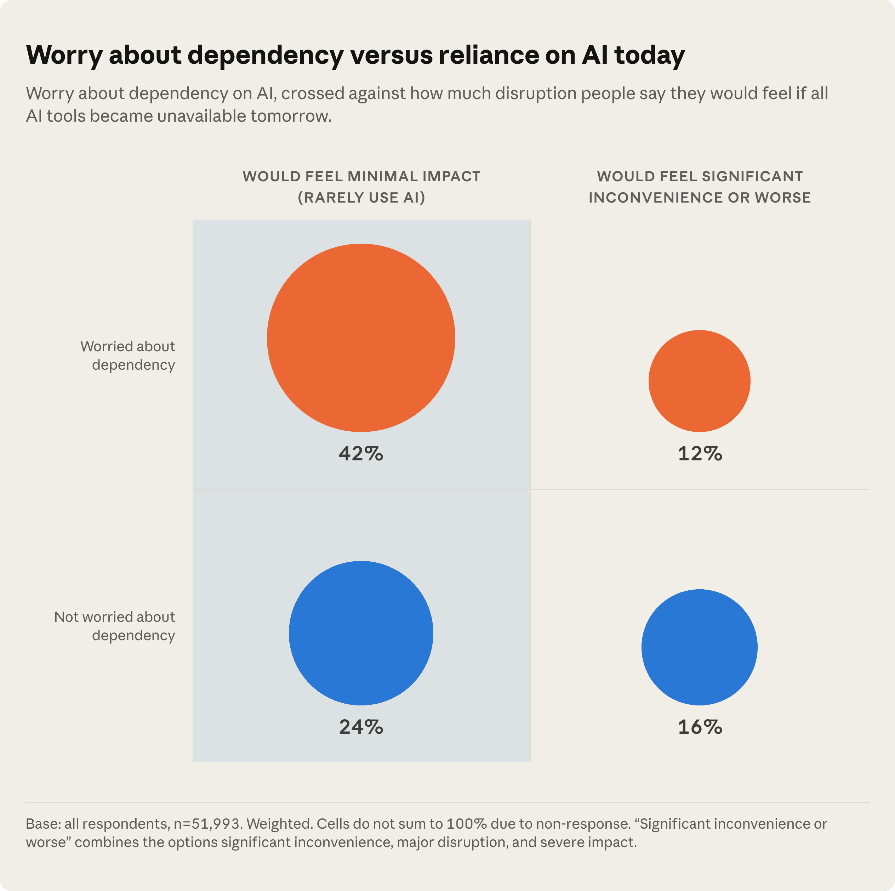
Our qualitative research among 81,000 Claude users found that educators were 2.5 to 3 times more likely than average to report having witnessed cognitive atrophy firsthand, presumably in their students. In Anthropic Public Record, educators are likewise among the occupations most worried about dependency, second only to people working in arts and design.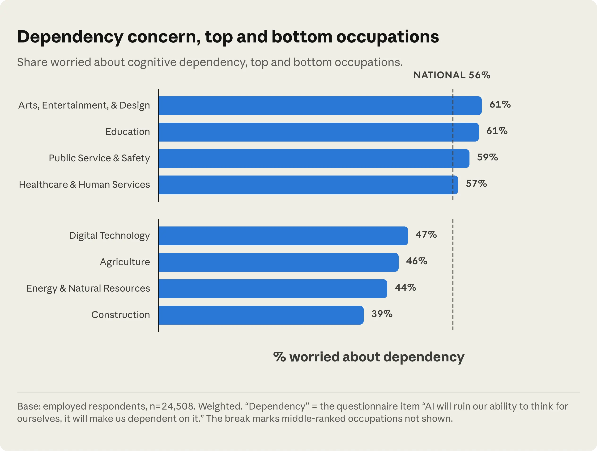
As with job loss, the dependency fear falls steadily with usage. Americans who use AI daily at work are 16 points less worried about dependency (46%) than those who never do (62%).What the heaviest AI users tell us
As of late 2025, about 6% of Americans used AI every day for both __ work and personal life. These integrated users are a preview of what more intensive adoption of AI looks like, and possibly of where mainstream opinion is headed as adoption grows. Integrated users skew young, male, urban, employed, and college-educated. Nearly two-thirds describe themselves as people who experiment with new technology before most others or adopt it early once they see its potential, compared to 30% in the general public.
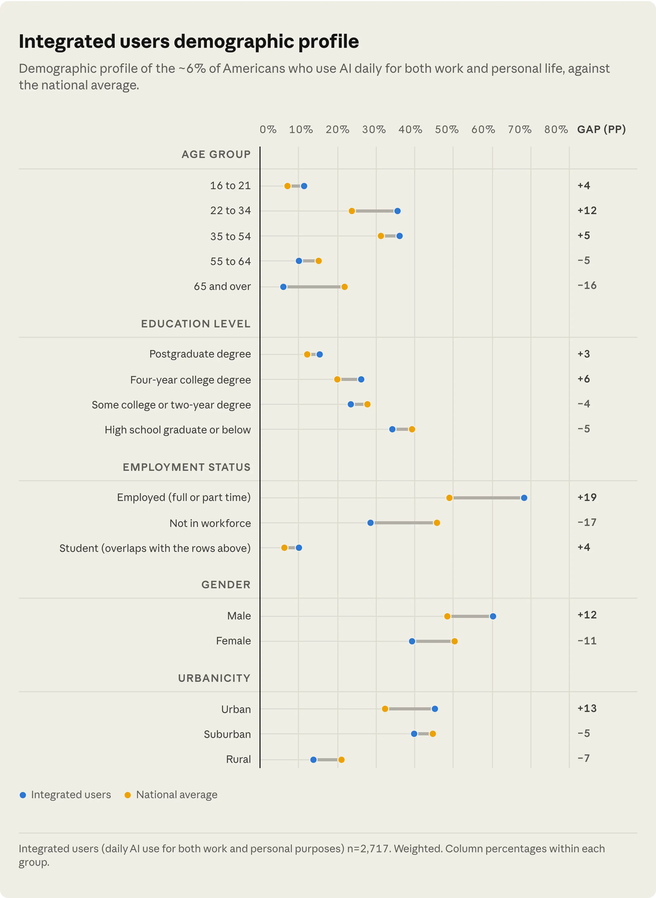
Integrated users are less worried than the general public across each of the harms we listed, though this probably reflects differences in the outlook of early adopters.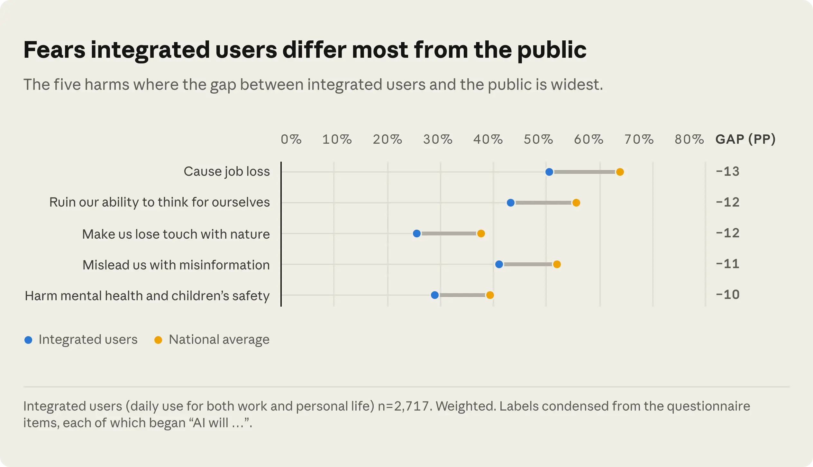
What Americans want from AI governance
71% of Americans say the government should be involved in the development and regulation of AI. The figure is 79% among Democrats, 68% among Republicans, and 69% among Independents—a bipartisan supermajority. A majority in every state and territory we surveyed supports government involvement in AI, from 81% in the District of Columbia to 63% in Hawaii.
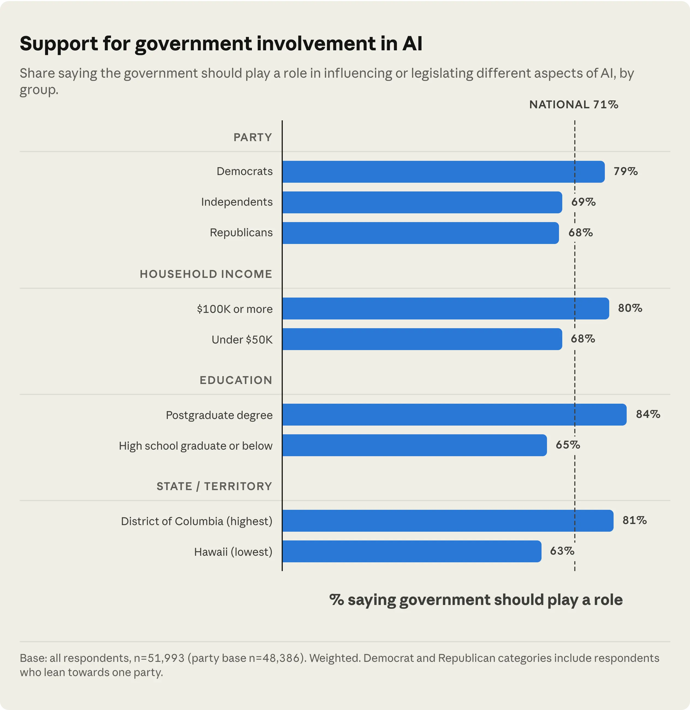
Where Americans want government to act
We then asked about eight specific domains, and how heavily the government should be involved in each. Only two—privacy and child safety—draw outright majority support for more than a minimal role. National security, meanwhile, has the narrowest partisan gap of any domain, just three points between Democrats and Republicans.
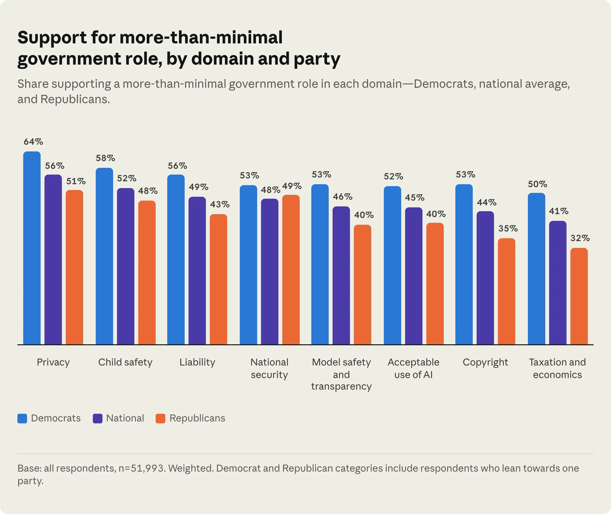
What Americans want from the industry
When we asked what should happen to ensure AI is developed in humanity's interest, Americans converged on two answers: hold AI companies legally liable for harm (47% chose it among their top three) and prioritize safety over growth (44%). Independent watchdogs with real power (29%) and slowing AI development for safety (27%) followed.
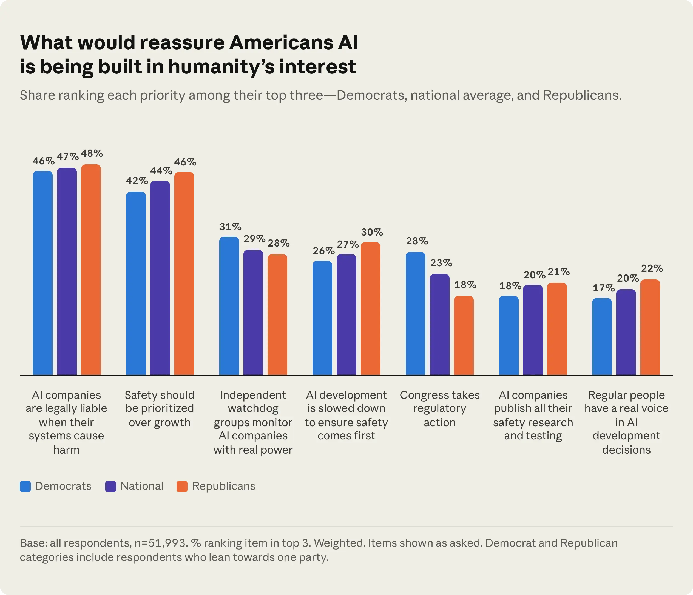
The trust deficit
Only 15% of Americans said they trust AI companies to make decisions about how the technology is developed and used. That was the lowest figure for any institution we tested, below the federal government (20%), state and local government (19%), and international bodies (20%), and far below independent experts (43%).

Integrated users have the same appetite for regulation and oversight
Integrated users were more trusting of every institution we asked about, including AI companies—and were markedly less inclined to say AI development should be slowed or stopped. However, they also support government involvement on AI at essentially the national rate (74% versus 71%), and across the eight specific governance domains we tested, their preferences are nearly indistinguishable from the public's.
Anthropic initiatives and what comes next
Public input is critical to ensuring that powerful AI serves humanity’s interests. Anthropic Public Record, Anthropic Interviewer, the Anthropic Economic Index, and many of our other research projects are all efforts to gain greater understanding and input from the public about how to make the AI transition go well. We recently announced several policy frameworks relevant to these findings. Our Advanced AI Framework proposes mandatory independent safety testing for frontier models, transparency requirements, and government authority to block or recall dangerous AI deployments. Our Economic Policy Framework lays out how governments can prepare for AI's economic impacts—minimizing job displacement where possible, and supporting workers so that AI's benefits are broadly shared. The direction AI takes should not be set only by the companies building it. The more clearly the public’s hopes and concerns are measured, the better we—and other companies—can meet them.
Appendix: Methodology
Population and mode: Anthropic Public Record is an online survey of the US late-teen and adult internet population, age 16 and over, resident in the 50 states, the District of Columbia, or Puerto Rico. Fieldwork was conducted by YouGov from its online panel between November 1 and December 11, 2025. Sample design: The study was designed as 52 parallel state and territory samples with a target of approximately 1,000 completes per state (approximately 500 in Montana, North Dakota, South Dakota, Wyoming, Vermont, and Puerto Rico). Quotas were set within each state on age, gender, education, and race/ethnicity. The achieved sample is 51,993 completes, with state sample sizes ranging from 232 (Alaska) to 1,902 (New York). Weighting: Data are weighted to be representative of the US resident population age 16 and over on state, age, gender, education, and race/ethnicity. Weights are normalized to the achieved sample size (mean 1.00, sum 51,993). Margin of error: The national margin of sampling error is ±0.6 percentage points at the 95% confidence level for a proportion of 50%. State-level margins of error range from ±2.6 points (California, New York, Texas) to ±9.1 points (Wyoming). Margins of error for subgroups are larger. Reporting conventions: All percentages in this report are weighted. Unless noted otherwise, percentages use the full segment as the denominator (respondents who answered "don't know" or skipped remain in the base). "Worried" on the fears battery is the top four boxes of a five-point worry scale. "As good or better" on the capability battery is the top three boxes of a five-point performance scale. "Integrated users" are respondents who report using AI one or more times daily for work and one or more times daily for personal purposes (unweighted n=2,717). Party affiliation groups include leaners. Limitations: Anthropic Public Record captures what Americans believed about AI in late 2025. We are treating it as a baseline.